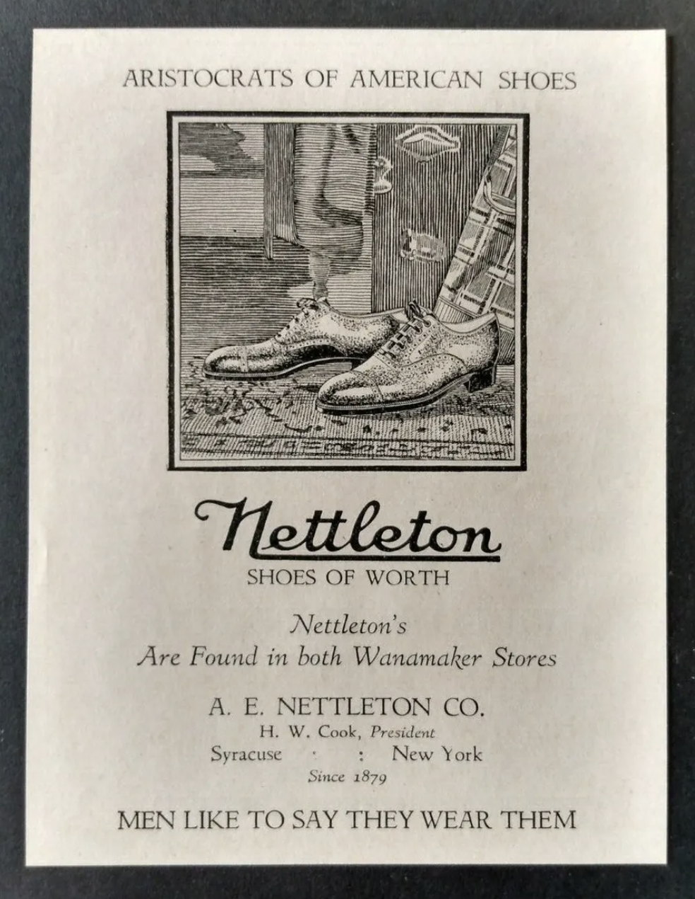
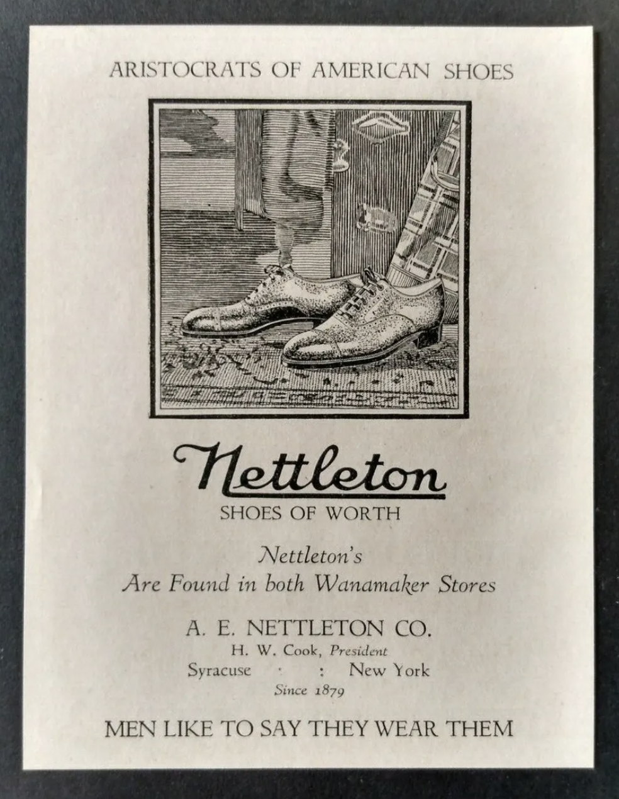
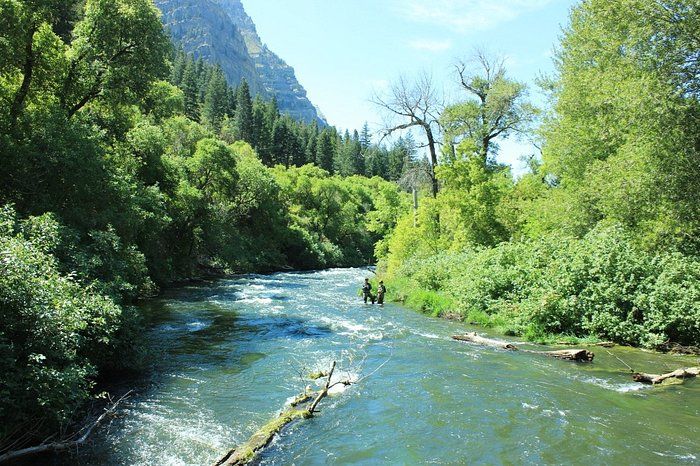
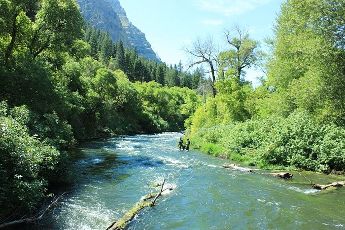

The coordinates are right by the Tweed Courthouse in City Hall Park. 1998 to August 1999 the area was
excavated as the land City Hall Park forms is part of the African Burial Ground and Historic Commons
Historic District. The result of the eight-month-long project was the identification of fifty-one (51)
features consisting of twenty-five (25) trash pits and twenty-six (26) architectural features, and the
recovery of more than an estimated two hundred fifty thousand (250,000) artifacts and faunal remains.
In 2001, CUNY reached an agreement with Parks to conduct the cataloguing, stabilization and analysis
of the artifacts. (archaeology.cityofnewyork.us)
"Investigations revealed that during the 17th and 18th centuries, free and enslaved Africans were
buried in a 6.6 acre burial ground in lower Manhattan outside the boundaries of the settlement of
New Amsterdam, which would become New York." (GSA.gov)
City Hall Park occupies Munsee Lenape land, one of three Lenape sub tribes. A fraudulent treaty known
as the Walking Purchase resulted in the forced removal of the Munsee, moving from the Delaware River
to the Susquehanna River.
These coordinates are very close to the Onondaga Historical Association and Firefighters Memorial Park.
Syracuse is "called the “Salt City,” flourished in the mid-1800s. Although the city had lost its
70-year monopoly in salt manufacturing the economy continued to prosper thanks to diversified industry,
the Erie Canal, and the railroads"(Syr.gov)
"Nyaweñha sgé•noñ’ is our traditional greeting when we meet each other. It is roughly translated to-
I am thankful that you are well."(Onondaganation.org)
Some interesting fun facts:
The reclining dental chair was invented by Syracuse's own Milton Waldo Hanchett in 1840.
Syracuse is a "super-green city," with top rankings in National Geographic and Popular Science.
The first pair of Loafers were created in Syracuse by the A.E. Nettleton Company in 1937.
34 miles from Washington D.C., Ashburn is often considered the 'Data Center Capital of the World.'
An estimated 70 percent of the planet’s Internet traffic flows each and every day.
Ashburn is the ideal place for Internet and fiber network expansion because of the cost of land, the
cost of electricity, safe location weather-wise, and the support of the local government.
"Residents and county governments there are beginning to weigh the industry’s economic benefits
against the environmental costs. Those costs include increased stormwater runoff from buildings
and parking lots, air pollution from backup generators and, perhaps above all, the pressure that
energy-intensive cloud computing puts on local power grids."(Bayjournal.com)
This coordinate is also right by Los Angeles's City Hall. Some fun facts:
"L.A. wasn’t always the home of the film industry. The City of Angels is famous for being the
land of show biz, but it hasn’t always been that way. The original location of the entertainment
industry was in Atlantic City. So why did it move to L.A.? Basically to get away from Thomas
Edison. Edison held most of the country’s film patents and established a monopoly on all aspects
of filmmaking. In Los Angeles filmmakers found freedom from his claims, cheap land and plenty
of labor"(travelnotesandbeyond.com).
There are 'secret' tunnels under the city. These tunnels are abandoned subway passages, and
routes people used to smuggle liquor during the Prohibition era.
Los Angeles is known for its car-dependency, "But the city (and the surrounding county) also
now has the country’s most ambitious plan for cutting emissions from transportation. In less
than a decade, it wants the majority of new cars to be electric and all city buses to be
electric—and it wants 20% of trips that currently happen in single-occupancy cars to shift to
public transportation or active transportation like biking"(Fastcompany.com).
A local's take on Provo (my roommate): "It has really weird energy. Provo used to be absolutely nothing,
and only started being developed in the 1950's. Many closed mines are in the area (copper, zinc, silver,
and lead), there are smoke stacks, and that is also where much of refining of salt happens. It's on Utah
Lake which is the 2nd largest lake in Utah. There's much contention around building as it's nearby the
lake. It's urbanized boonies."
"Provo soon became known as the "Garden City" because of its extensive fruit orchards, trees, and gardens.
In the late 1860s, industrialization began with the creation of The Provo Woolen Mills. In the 1920s, the
Ironton Steel Mill was established, and later the much larger Geneva Steel Plant was built in the city.
Angel Meroni - The angel on top of all the LDS temples.
The Ute: the language of the Utes is Shoshonean, a dialect of that Uto-Aztecan language. As of 2013, it has a
tribal membership of 2,970 and over half of its membership lives on the Reservation. Beginning in 1847, Utes
experienced the full impact of Euro-American contact with the arrival of Mormon settlers.
 



 
